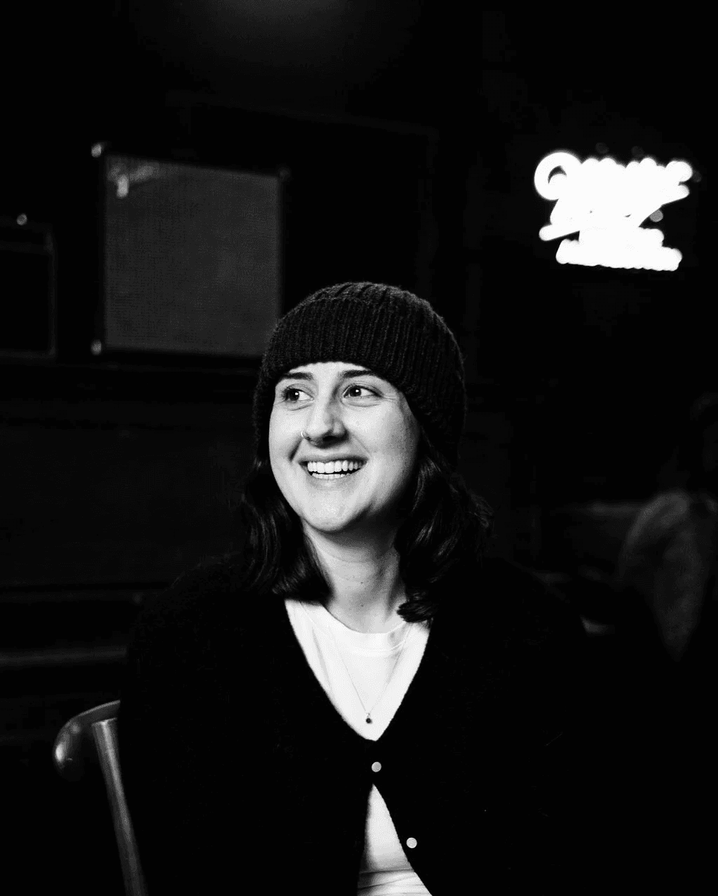

AP News · 2026
RFK Jr is launching a podcast to expose 'lies' that have made Americans sick
Mention
Read ↗

I am a postdoctoral fellow for NYU's Center for Social Media and Politics and a Siegel Research Fellow for the Siegel Family Endowment. I attained my PhD in Political Science from the University of California, Irvine in 2024. I was also a visiting Ph.D. student with the Alvarez Lab at California Institute of Technology.
For CSMaP, I specialize in the intersection of political psychology, survey methodologies, and social media in the American context. In addition, I work on questions of identity politics and statistical methodologies to study intersectionality. I have also worked on questions of gender-based mobilization on social media during the #MeToo era and in the wake of Dobbs v. Jackson.
My latest project centers on what I call gendered media spaces — digital information environments that form around masculine and feminine audience characteristics and preferences, leading men and women to be exposed to different sorts of political content. I show particularly how in the podcast ecosystem, this leads to tangible impacts on vote choice and political attitudes.
I am available for media commentary and public writing on these topics. Outside of work, I'm a former collegiate soccer player, avid lifter, mountain biker, and Dungeons & Dragons enthusiast. I enjoy long talks about women's soccer and anything San Diego (my hometown).


American Friction · Spotify · Feb 2025
Should Harris have gone on Rogan? How ideologically consistent is the podcast "manosphere?"